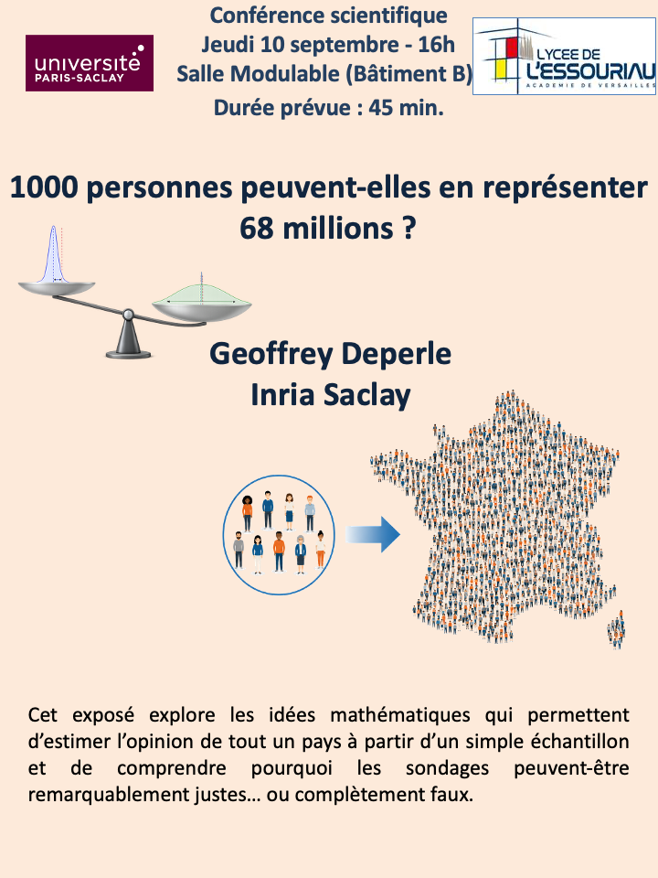

2026
10 septembre

CPGE
PCSI
PC
1000 personnes peuvent-elles représenter 68 millions ?
Lycée L’Essouriau — Les Ulis
Cet exposé explore les mathématiques qui permettent de comprendre le fonctionnement des sondages. De la loi binomiale au compromis biais-variance, nous verrons comment les statisticiens estiment l'opinion d'une population et corrigent les biais inhérents aux enquêtes.